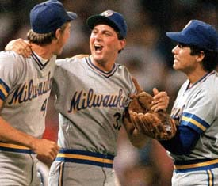

Residuals for Baseline Model

Kenny Shirley
NYC Sports Analytics Meetup, August 19, 2014
Built for machines; safe, secure, and habitable by humans.
Joint work with:
Carlos Scheidegger (University of Arizona)
and
Carson Sievert (Iowa State University)
Jeff Cirillo, 3B, 1994 - 2007: .296 BA, 112 HR, 32 WAR, 2 All-Star Teams, 2013 HOF ballot
Jeromy Burnitz, OF, 1993 - 2006: .253 BA, 315 HR, 17.4 WAR, 1 All-Star Team, 2012 HOF ballot

Dan Plesac, P, 1986 - 2003: 65 - 71 Win-Loss, 3.64 ERA, 17.2 WAR, 3 All-Star Teams, 2009 HOF ballot
## Name Year WAR Votes NumBallots
## 1 Jacque Jones 2014 11.5 1 571
## 2 David Segui 2010 7.8 1 539
## 3 Shawon Dunston 2008 9.1 1 543
## 4 Walt Weiss 2006 14.6 1 520
## 5 Randy Myers 2004 14.2 1 506
## 6 Cecil Fielder 2004 14.7 1 506
## 7 Mark Davis 2003 6.8 1 496
## 8 Jim Deshaies 2001 10.2 1 515
## 9 Steve Bedrosian 2001 13.2 1 515
## 10 Ray Knight 1994 10.9 1 456## Year Name Pos NumBallots Votes Percentage
## 1 1936 Ty Cobb OF 226 222 98.20%
## 2 1936 Honus Wagner SS 226 215 95.10%
## 3 1936 Babe Ruth OF 226 215 95.10%
## 4 1936 Christy Mathewson P 226 205 90.70%
## 5 1936 Walter Johnson P 226 189 83.60%Does it really take 15 years to decide?
The so-called 'morals' clause, rule 5 out of 9:
Voting: Voting shall be based upon the player's record, playing ability, integrity, sportsmanship, character, and contributions to the team(s) on which the player played.
(from http://baseballhall.org/hall-famers/rules-election/BBWAA)
The voters don't actively cover baseball!
Q: Does that mean some Hall of Fame voters don’t even cover baseball any more?
A: Yes. The BBWAA trusts that its voters take their responsibility seriously, and even those honorary members who are no longer covering baseball do their due diligence to produce a thoughtful ballot.
(from http://bbwaa.com/voting-faq/)
Stupid things are called out as stupid, and people try to figure out how to correct them. It's encouraging. It's kinda nice. And then there is Baseball Hall of Fame voting.
We were really interested in the trajectories of voting percentages of players who had appeared on the ballot multiple times.
dat <- read.csv(file="HOFregression_updated.csv", as.is=TRUE)
par(mfrow=c(1, 2))
sel <- dat[, "Name"] == "Alan Trammell"
plot(dat[sel, "Year"], dat[sel, "p"], ylim=c(0, 1), las=1, pch=19, xlab="Year",
ylab="Voting Proportion")
lines(dat[sel, "Year"], dat[sel, "p"])
title(main="Alan Trammell")
abline(h = 0.05, col=2, lwd=2)
abline(h = 0.75, col=3, lwd=2)
sel <- dat[, "Name"] == "Bert Blyleven"
plot(dat[sel, "Year"], dat[sel, "p"], ylim=c(0, 1), las=1, pch=19, xlab="Year",
ylab="Voting Proportion")
lines(dat[sel, "Year"], dat[sel, "p"])
title(main="Bert Blyleven")
abline(h = 0.05, col=2, lwd=2)
abline(h = 0.75, col=3, lwd=2)We were really interested in the trajectories of voting percentages of players who had appeared on the ballot multiple times.
How did these guys end up with such different voting trajectories?
[1] For Batting Average, 2.5 points for each season over .300, 5.0 for over .350, 15 for over .400. Seasons are not double-counted. I require 100 games in a season to qualify for this bonus. [2] For hits, 5 points for each season of 200 or more hits. [3] 3 points for each season of 100 RBI's and 3 points for each season of 100 runs. [4] 10 points for 50 home runs, 4 points for 40 HR, and 2 points for 30 HR. [5] 2 points for 45 doubles and 1 point for 35 doubles. [6] 8 points for each MVP award and 3 for each AllStar Game, and 1 point for a Rookie of the Year award. [7] 2 points for a gold glove at C, SS, or 2B, and 1 point for any other gold glove. [8] 6 points if they were the regular SS or C on a WS winning team, 5 points for 2B or CF, 3 for 3B, 2 for LF or RF, and 1 for 1B. I don't have the OF distribution, so I give 3 points for OF (requires at least 82 games as the position). ... [19] ...
# Group 1: batters
var.names[[1]] <- c("Yrs", "G", "AB", "R", "H", "HR", "RBI", "SB", "BB",
"BA", "OBP", "SLG",
"posC", "pos1B", "pos2B", "pos3B", "posSS", "posLF", "posCF", "posRF")
# Group 2: pitchers
var.names[[2]] <- c("Yrs", "W", "L", "G", "GS", "SV", "IP", "H", "HR", "BB", "SO",
"ERA", "WHIP")
# Group 3: returning players
# Just use the previous year's voting percentage as the sole predictor
var.names[[3]] <- c("prev1")# Fit the model using weak priors:
fit <- bayesglm(data[sel, "p"] ~ X.scale, weights=data[sel, "NumBallots"],
family=binomial(link = "logit"),
prior.mean=0, prior.scale=2.5)Coefficients:
Estimate Std. Error z value Pr(>|z|)
(Intercept) -4.95399 0.05830 -84.972 < 2e-16 ***
X.scaleYrs 0.50693 0.05896 8.597 < 2e-16 ***
X.scaleG 1.02455 0.19500 5.254 1.49e-07 ***
X.scaleAB -3.63447 0.48990 -7.419 1.18e-13 ***
X.scaleR 2.27816 0.14228 16.012 < 2e-16 ***
X.scaleH 3.09098 0.51523 5.999 1.98e-09 ***
X.scaleHR 1.02895 0.11611 8.862 < 2e-16 ***
X.scaleRBI -0.96718 0.11939 -8.101 5.44e-16 ***
X.scaleSB 0.05451 0.02301 2.370 0.0178 *
X.scaleBB 0.11784 0.10958 1.075 0.2822
X.scaleBA 0.36248 0.14991 2.418 0.0156 *
X.scaleOBP -0.87497 0.12853 -6.807 9.93e-12 ***
X.scaleSLG 0.66728 0.12253 5.446 5.15e-08 ***
X.scaleposC 1.23696 0.08342 14.828 < 2e-16 ***
X.scalepos1B 0.62907 0.08655 7.268 3.65e-13 ***
X.scalepos2B 0.69809 0.07841 8.903 < 2e-16 ***
X.scalepos3B 0.54610 0.07735 7.060 1.66e-12 ***
X.scaleposSS 0.98036 0.07683 12.759 < 2e-16 ***
X.scaleposLF 0.40763 0.08836 4.613 3.97e-06 ***
X.scaleposCF -0.01915 0.08636 -0.222 0.8245
X.scaleposRF 0.49648 0.08293 5.987 2.14e-09 ***
---
Signif. codes: 0 ‘***’ 0.001 ‘**’ 0.01 ‘*’ 0.05 ‘.’ 0.1 ‘ ’ 1
Name Prediction Actual
1 Dave Parker 39.4 17.5
2 Dwight Evans 51.8 5.9
3 Ken Griffey 12.7 4.7
4 Garry Templeton 5.3 0.4
5 Terry Kennedy 0.5 0.2
6 Terry Puhl 0.2 0.2
for (year in 1997:2014) {
for (group in c("batters", "pitchers", "returning")) {
train <- Year < year & Group == group
test <- Year == year & Group == group
historical.fit <- glm(y[train] ~ data[train, ])
predict <- predict(historical.fit, newdata=data[test, ])
}
}| Group | Baseline | ||
|---|---|---|---|
| First-ballot Batters (n = 151) | 18.4% | ||
| First-ballot Pitchers (n = 85) | 9.7% | ||
| Returning Players (n = 262) | 5.7% | ||
| Overall | 11.7% |
Name Previous Predicted
1 Craig Biggio 68.2 77.0
2 Jack Morris 67.7 76.5
3 Jeff Bagwell 59.6 67.5
4 Mike Piazza 57.8 65.3
5 Tim Raines 52.2 58.0
6 Lee Smith 47.8 52.0
7 Curt Schilling 38.8 39.7
8 Frank Thomas 0.0 39.2
9 Jeff Kent 0.0 38.7
10 Roger Clemens 37.6 38.1
11 Greg Maddux 0.0 37.5
12 Barry Bonds 36.2 36.3
13 Edgar Martinez 35.9 35.9
14 Alan Trammell 33.6 33.0
15 Luis Gonzalez 0.0 23.0
16 Larry Walker 21.6 20.3
17 Fred McGriff 20.7 19.5
18 Mark McGwire 16.9 16.4
19 Mike Mussina 0.0 16.3
20 Tom Glavine 0.0 15.1
21 Don Mattingly 13.2 13.8
22 Sammy Sosa 12.5 13.3
23 Rafael Palmeiro 8.8 11.1
24 Moises Alou 0.0 10.5
25 Ray Durham 0.0 7.1
26 Armando Benitez 0.0 3.3
27 Sean Casey 0.0 0.9
28 Eric Gagne 0.0 0.8
29 Richie Sexson 0.0 0.6
30 Paul Lo Duca 0.0 0.5
31 J.T. Snow 0.0 0.4
32 Kenny Rogers 0.0 0.4
33 Hideo Nomo 0.0 0.2
34 Jacque Jones 0.0 0.1
35 Todd Jones 0.0 0.1
36 Mike Timlin 0.0 0.1
Year Name Actual Predicted Residual 1 2002 Ozzie Smith 91.7 9.3 82.4 2 2001 Kirby Puckett 82.1 2.8 79.3 3 2005 Wade Boggs 91.9 57.1 34.8 4 2004 Paul Molitor 85.2 56.0 29.2 5 2010 Edgar Martinez 36.2 7.6 28.6
1 2011 Rafael Palmeiro 11.0 93.8 -82.8 2 2013 Barry Bonds 36.2 99.5 -63.3 3 2013 Roger Clemens 37.6 99.5 -61.9 4 2010 Fred McGriff 21.5 73.9 -52.4 5 2013 Julio Franco 1.1 52.3 -51.3
Don't google image search "Barry Bonds before vs. after" unless you have half an hour to kill...
Don't google image search "Barry Bonds before vs. after" unless you have half an hour to kill...
Don't google image search "Barry Bonds before vs. after" unless you have half an hour to kill...
People have really put a lot of work into this sort of comparison
Related searches: McGwire, Clemens, Sosa.
Coefficients:
Estimate Std. Error z value Pr(>|z|)
(Intercept) -5.06179 0.04106 -123.281 < 2e-16 ***
X.scaleYrs 0.45714 0.03482 13.127 < 2e-16 ***
X.scaleG 0.04859 0.14207 0.342 0.732324
X.scaleAB 1.19308 0.35354 3.375 0.000739 ***
X.scaleR 0.77132 0.08730 8.835 < 2e-16 ***
X.scaleH -0.45612 0.33860 -1.347 0.177963
X.scaleHR 0.23513 0.07811 3.010 0.002611 **
X.scaleRBI -0.25777 0.07589 -3.397 0.000682 ***
X.scaleSB 0.05965 0.01926 3.098 0.001950 **
X.scaleBB 0.19772 0.07434 2.660 0.007821 **
X.scaleBA 0.70078 0.09828 7.130 1.00e-12 ***
X.scaleOBP -0.34334 0.09172 -3.743 0.000182 ***
X.scaleSLG 0.44604 0.08467 5.268 1.38e-07 ***
X.scaleposC 0.15346 0.02416 6.351 2.14e-10 ***
X.scalepos1B 0.12147 0.02200 5.523 3.34e-08 ***
X.scalepos2B -0.11253 0.02412 -4.665 3.09e-06 ***
X.scalepos3B -0.05741 0.02361 -2.431 0.015055 *
X.scaleposSS 0.10689 0.02301 4.646 3.38e-06 ***
X.scaleposLF 0.03260 0.02365 1.379 0.168038
X.scaleposCF -0.20443 0.02516 -8.127 4.41e-16 ***
X.scaleposRF -0.17331 0.02406 -7.203 5.87e-13 ***
X.scaledrugs -0.91577 0.02574 -35.583 < 2e-16 ***
X.scaleAllStarpy 1.12873 0.01691 66.752 < 2e-16 ***
X.scalegold.gloves 0.20908 0.01136 18.411 < 2e-16 ***
---
Signif. codes: 0 ‘***’ 0.001 ‘**’ 0.01 ‘*’ 0.05 ‘.’ 0.1 ‘ ’ 1
Nice -- the z-scores for the three new predictors are highly significant, and have signs that we expected.
| Group | Baseline | Awards + Drugs | |
|---|---|---|---|
| First-ballot Batters (n = 151) | 18.4% | 15.2% | |
| First-ballot Pitchers (n = 85) | 9.7% | 8.6% | |
| Returning Players (n = 262) | 5.7% | 5.7% | |
| Overall | 11.7% | 10.0% |
Name Previous Predicted
1 Greg Maddux 0.0 96.0
2 Craig Biggio 68.2 77.0
3 Jack Morris 67.7 76.5
4 Jeff Bagwell 59.6 67.5
5 Mike Piazza 57.8 65.3
6 Tim Raines 52.2 58.0
7 Mike Mussina 0.0 57.7
8 Lee Smith 47.8 52.0
9 Frank Thomas 0.0 51.0
10 Tom Glavine 0.0 50.5
11 Curt Schilling 38.8 39.7
12 Roger Clemens 37.6 38.1
13 Barry Bonds 36.2 36.3
14 Edgar Martinez 35.9 35.9
15 Alan Trammell 33.6 33.0
16 Luis Gonzalez 0.0 20.9
17 Larry Walker 21.6 20.3
18 Fred McGriff 20.7 19.5
19 Mark McGwire 16.9 16.4
20 Don Mattingly 13.2 13.8
21 Sammy Sosa 12.5 13.3
22 Moises Alou 0.0 13.1
23 Rafael Palmeiro 8.8 11.1
24 Jeff Kent 0.0 11.0
Whew. At least now the results are plausible. Maddux is a lock, and Glavine and Thomas are above 50% (just barely).
Year Name Actual Predicted Residual 1 2001 Kirby Puckett 82.1 12.0 70.1 2 1999 Robin Yount 77.5 8.6 68.9 3 1999 George Brett 98.2 54.3 43.9 4 2004 Paul Molitor 85.2 50.3 34.9 5 2005 Wade Boggs 91.9 60.4 31.4
Year Name Actual Predicted Residual 1 2013 Barry Bonds 36.2 99.3 -63.1 2 2013 Roger Clemens 37.6 97.9 -60.3 3 2008 Tim Raines 24.3 81.7 -57.4 4 2007 Jose Canseco 1.1 38.6 -37.5 5 2007 Mark McGwire 23.5 58.7 -35.2
Year Name Actual Predicted Residual 1 2001 Kirby Puckett 82.1 12.0 70.1 2 1999 Robin Yount 77.5 8.6 68.9 3 1999 George Brett 98.2 54.3 43.9 4 2004 Paul Molitor 85.2 50.3 34.9 5 2005 Wade Boggs 91.9 60.4 31.4
Year Name Actual Predicted Residual 1 2013 Barry Bonds 36.2 99.3 -63.1 2 2013 Roger Clemens 37.6 97.9 -60.3 3 2008 Tim Raines 24.3 81.7 -57.4 4 2007 Jose Canseco 1.1 38.6 -37.5 5 2007 Mark McGwire 23.5 58.7 -35.2
Coefficients:
Estimate Std. Error z value Pr(>|z|)
(Intercept) -1.104016 0.004748 -232.535 < 2e-16 ***
X.scaleprev1 1.456224 0.018842 77.288 < 2e-16 ***
X.scaleprev1.squared -0.419837 0.017857 -23.510 < 2e-16 ***
X.scaletop3 -0.189887 0.004369 -43.460 < 2e-16 ***
X.scalereturn -0.016023 0.004591 -3.490 0.000482 ***
X.scaleballot2ndyear -0.071682 0.009175 -7.813 5.60e-15 ***
X.scaleballotfinal 0.026895 0.004286 6.276 3.48e-10 ***
X.scaleballot2nd.x.prev1 0.091116 0.008260 11.031 < 2e-16 ***
---
Signif. codes: 0 ‘***’ 0.001 ‘**’ 0.01 ‘*’ 0.05 ‘.’ 0.1 ‘ ’ 1
| Group | Baseline | Awards + Drugs | Milestones, One-team, and 'Returning' |
|---|---|---|---|
| First-ballot Batters (n = 151) | 18.4% | 15.2% | 13.5% |
| First-ballot Pitchers (n = 85) | 9.7% | 8.6% | 9.6% |
| Returning Players (n = 262) | 5.7% | 5.7% | 4.6% |
| Overall | 11.7% | 10.0% | 9.1% |
Well, it's not great that the 1st-ballot pitchers RMSE went up (adding milestones, or rookie of the year, or something made the model perform worse for them), but we'll keep the effect in.
Name Previous Predicted
1 Greg Maddux 0.0 97.4
2 Craig Biggio 68.2 73.7
3 Jack Morris 67.7 70.2
4 Frank Thomas 0.0 64.2
5 Mike Piazza 57.8 63.7
6 Jeff Bagwell 59.6 60.4
7 Tom Glavine 0.0 53.5
8 Tim Raines 52.2 52.7
9 Lee Smith 47.8 47.7
10 Mike Mussina 0.0 42.4
11 Curt Schilling 38.8 38.5
12 Roger Clemens 37.6 36.8
13 Barry Bonds 36.2 34.8
14 Edgar Martinez 35.9 33.1
15 Alan Trammell 33.6 30.4
16 Larry Walker 21.6 17.5
17 Fred McGriff 20.7 16.7
18 Mark McGwire 16.9 13.5
19 Don Mattingly 13.2 10.8
20 Luis Gonzalez 0.0 9.6
21 Sammy Sosa 12.5 9.4
22 Moises Alou 0.0 8.7
23 Rafael Palmeiro 8.8 8.2
24 Jeff Kent 0.0 5.1

Name Previous Predicted
1 Randy Johnson 0.0 99.8
2 Pedro Martinez 0.0 93.5
3 John Smoltz 0.0 72.4
4 Craig Biggio 74.8 69.2
5 Mike Piazza 62.2 59.2
6 Jeff Bagwell 54.3 51.3
7 Tim Raines 46.1 41.9
8 Roger Clemens 35.4 29.3
9 Barry Bonds 34.7 28.5
10 Lee Smith 29.9 23.4
11 Curt Schilling 29.2 22.6
12 Edgar Martinez 25.2 18.7
13 Alan Trammell 20.8 14.9
14 Mike Mussina 20.3 13.8
15 Jeff Kent 15.2 9.9
16 Fred McGriff 11.7 8.7
17 Mark McGwire 11.0 8.3
18 Larry Walker 10.2 7.8
19 Don Mattingly 8.2 7.8
20 Nomar Garciaparra 0.0 7.8
21 Gary Sheffield 0.0 7.6
22 Sammy Sosa 7.2 6.4
23 Troy Percival 0.0 5.3
24 Carlos Delgado 0.0 1.9
Name Previous Predicted
1 Randy Johnson 0.0 99.8
2 Pedro Martinez 0.0 93.5
3 John Smoltz 0.0 72.4
4 Craig Biggio 74.8 69.2
5 Mike Piazza 62.2 59.2
6 Jeff Bagwell 54.3 51.3
7 Tim Raines 46.1 41.9
8 Roger Clemens 35.4 29.3
9 Barry Bonds 34.7 28.5
10 Lee Smith 29.9 23.4
11 Curt Schilling 29.2 22.6
12 Edgar Martinez 25.2 18.7
13 Alan Trammell 20.8 14.9
14 Mike Mussina 20.3 13.8
15 Jeff Kent 15.2 9.9
16 Fred McGriff 11.7 8.7
17 Mark McGwire 11.0 8.3
18 Larry Walker 10.2 7.8
19 Don Mattingly 8.2 7.8
20 Nomar Garciaparra 0.0 7.8
21 Gary Sheffield 0.0 7.6
22 Sammy Sosa 7.2 6.4
23 Troy Percival 0.0 5.3
24 Carlos Delgado 0.0 1.9
Name Previous Predicted
1 Randy Johnson 0.0 99.8
2 Pedro Martinez 0.0 93.5
3 John Smoltz 0.0 72.4
4 Craig Biggio 74.8 69.2
5 Mike Piazza 62.2 59.2
6 Jeff Bagwell 54.3 51.3
7 Tim Raines 46.1 41.9
8 Roger Clemens 35.4 29.3
9 Barry Bonds 34.7 28.5
10 Lee Smith 29.9 23.4
11 Curt Schilling 29.2 22.6
12 Edgar Martinez 25.2 18.7
13 Alan Trammell 20.8 14.9
14 Mike Mussina 20.3 13.8
15 Jeff Kent 15.2 9.9
16 Fred McGriff 11.7 8.7
17 Mark McGwire 11.0 8.3
18 Larry Walker 10.2 7.8
19 Don Mattingly 8.2 7.8
20 Nomar Garciaparra 0.0 7.8
21 Gary Sheffield 0.0 7.6
22 Sammy Sosa 7.2 6.4
23 Troy Percival 0.0 5.3
24 Carlos Delgado 0.0 1.9
Name Previous Predicted
1 Randy Johnson 0.0 99.8
2 Pedro Martinez 0.0 93.5
3 John Smoltz 0.0 72.4
4 Craig Biggio 74.8 69.2
5 Mike Piazza 62.2 59.2
6 Jeff Bagwell 54.3 51.3
7 Tim Raines 46.1 41.9
8 Roger Clemens 35.4 29.3
9 Barry Bonds 34.7 28.5
10 Lee Smith 29.9 23.4
11 Curt Schilling 29.2 22.6
12 Edgar Martinez 25.2 18.7
13 Alan Trammell 20.8 14.9
14 Mike Mussina 20.3 13.8
15 Jeff Kent 15.2 9.9
16 Fred McGriff 11.7 8.7
17 Mark McGwire 11.0 8.3
18 Larry Walker 10.2 7.8
19 Don Mattingly 8.2 7.8
20 Nomar Garciaparra 0.0 7.8
21 Gary Sheffield 0.0 7.6
22 Sammy Sosa 7.2 6.4
23 Troy Percival 0.0 5.3
24 Carlos Delgado 0.0 1.9
???
Name Previous Predicted
1 Randy Johnson 0.0 99.8
2 Pedro Martinez 0.0 93.5
3 John Smoltz 0.0 72.4
4 Craig Biggio 74.8 69.2
5 Mike Piazza 62.2 59.2
6 Jeff Bagwell 54.3 51.3
7 Tim Raines 46.1 41.9
8 Roger Clemens 35.4 29.3
9 Barry Bonds 34.7 28.5
10 Lee Smith 29.9 23.4
11 Curt Schilling 29.2 22.6
12 Edgar Martinez 25.2 18.7
13 Alan Trammell 20.8 14.9
14 Mike Mussina 20.3 13.8
15 Jeff Kent 15.2 9.9
16 Fred McGriff 11.7 8.7
17 Mark McGwire 11.0 8.3
18 Larry Walker 10.2 7.8
19 Don Mattingly 8.2 7.8
20 Nomar Garciaparra 0.0 7.8
21 Gary Sheffield 0.0 7.6
22 Sammy Sosa 7.2 6.4
23 Troy Percival 0.0 5.3
24 Carlos Delgado 0.0 1.9